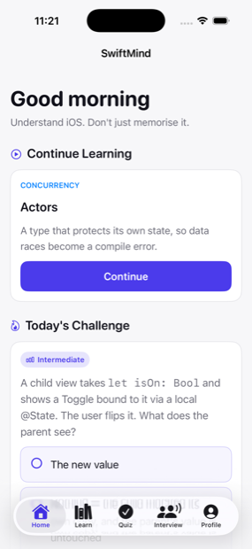
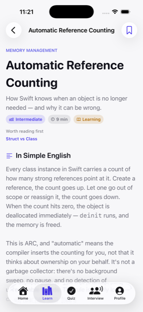
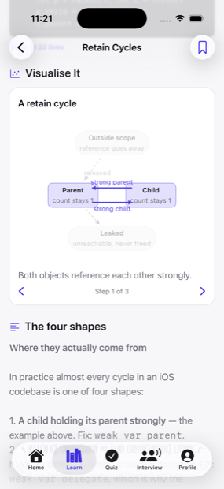
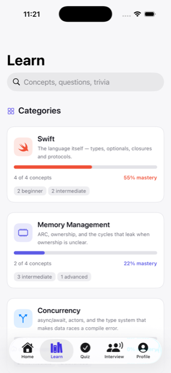
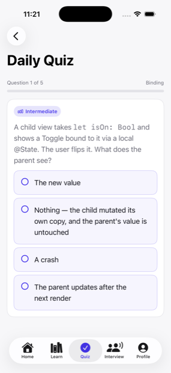
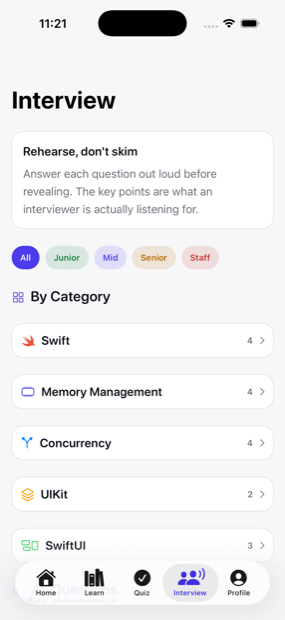
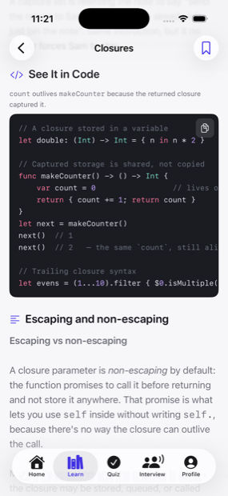
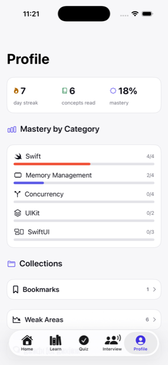

Swift
The language itself — types, optionals, closures and protocols.
Understand iOS. Don't just memorize it.
An offline-first learning app for iPhone and iPad that teaches iOS concepts the way they actually work — explanation, analogy, diagram, code, and a question that checks whether it landed.
Coming to the App Store
iPhone & iPad · Works fully offline · No account

The learning loop
Reading something once is not learning it. Every concept in SwiftMind walks the same loop, so understanding is built and then tested rather than assumed.
Anatomy of a concept
A concept isn't a page of paragraphs. It's a sequence of typed sections, each doing one job, each rendered differently — so you can see the shape of an idea before you've finished reading it.


Five categories
The language itself — types, optionals, closures and protocols.
ARC, ownership, and the cycles that leak when ownership is unclear.
async/await, actors, and the type system that makes data races a compile error.
View controllers, events, and the framework SwiftUI still sits on top of.
Declarative views, state ownership, and how the framework decides what to redraw.
Learn
Every concept is tagged beginner, intermediate, advanced or senior,
so the same catalogue works whether you're meeting optionals for the
first time or revisiting Sendable before an interview.

Quiz
Getting it wrong is the useful part. Every answer comes with the reasoning, and what you miss comes back later on a spaced schedule instead of disappearing.

Interview
Real iOS interview questions, banded junior through staff, each with a model answer and the follow-up an interviewer would actually ask next.

Code
Code examples sit inside the concept that needs them, next to the mistake they prevent — not in a separate snippet library you have to go and find.

Progress
Progress is tracked per concept and per category, so the app can tell you what you've actually retained rather than how many screens you've scrolled past.

In the first release
Private by design
SwiftMind makes no network requests. There is no account, no analytics, no third-party SDK, and no telemetry — the entire catalogue ships inside the app, and your progress is stored on device and nowhere else. Offline isn't a mode here; it's the only way it works.